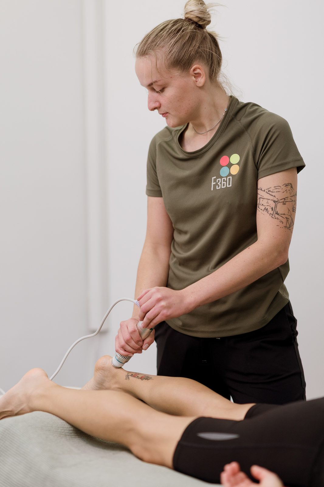

Lökéshullám-terápia
A modern sportrehabilitáció egyik leginnovatívabb regenerációs technológiája: rövid, intenzív akuszto-mechanikus impulzusok, amelyek javítják az érfalak átjárhatóságát, új hajszálerek képződését indítják el, aktiválják a kollagén- és csontszövet-újraképződést, és feloldják a kalciumlerakódásokat.
- Achilles-ín gyulladás, teniszkönyök, golfkönyök
- talpi fascia gyulladás, sarokfájdalom
- rotátorköpeny-gyulladás, vállpanaszok
- csontkinövések, meszesedések
Kezelési idő10-30 perc · 12 000 Ft
ElőtteKinvent PROFIT mérés
Kombinálhatóultrahang · lézer · TENS
